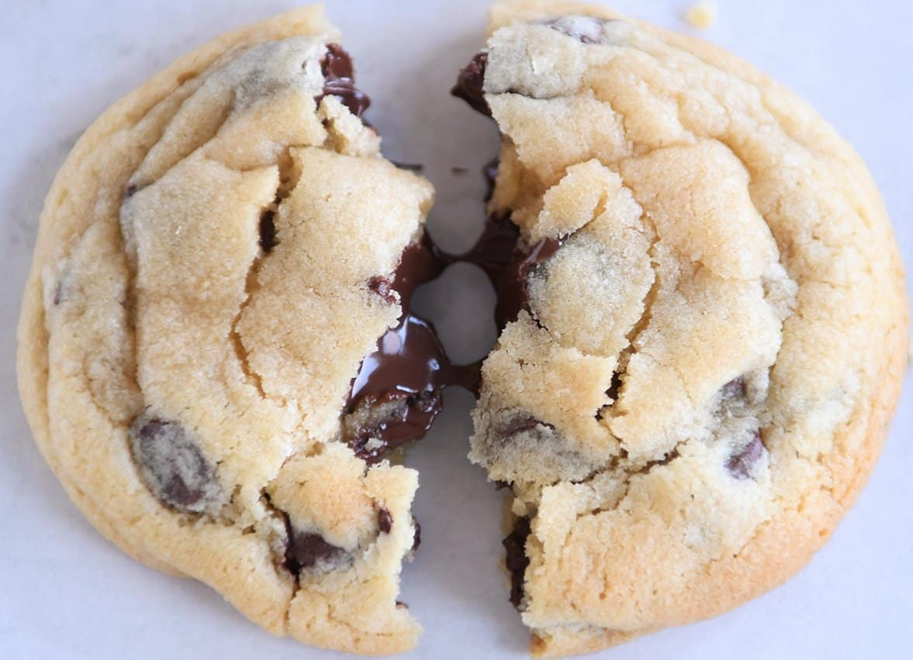

STEPS
- Preheat the oven to 375°F (190°C). Line baking sheets with parchment paper or silicone baking mats.
- In a large mixing bowl 🥣, cream together the softened butter 🧈, granulated sugar , brown sugar, and vanilla extract until light and fluffy.
- Add the eggs 🥚🥚, one at a time, beating well after each addition.
- In a separate bowl, whisk together the flour, baking soda, and salt.
- Gradually add the dry ingredients to the wet ingredients, mixing until just combined.
- Stir in the chocolate chips and chopped nuts (if using) until evenly distributed throughout the dough.
- Drop rounded tablespoons of dough onto the prepared baking sheets, spacing them about 2 inches apart.
- Bake in the preheated oven for 9 to 11 minutes, or until the edges are golden brown.
- Remove from the oven and allow the cookies to cool on the baking sheets for a few minutes before transferring them to wire racks to cool completely.
